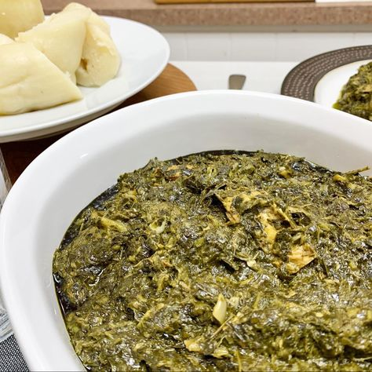

Isombe
Rwanda - East Africa

About this dish
Isombe is a favorite Rwandan dish made with cassava leaves, eggplant and ground peanuts that make the sauce thick and creamy. It is usually eaten with rice, boiled potatoes or ugali. Cassava leaves must always be cooked well before eating.
Ingredients
4 servings
- 500 g cassava leaves (or kale)
- 1 eggplant, cubed
- 3 green onions
- 1 green pepper
- 2 cloves garlic
- 0.25 cup peanut butter
- 2 tbsp palm or vegetable oil
- 2 cups water
- Salt to taste
Cooking instructions
Step 1: Preparation
- Wash the cassava leaves and chop them small.
- Boil the leaves in water for 20 minutes, then drain.
Step 2: Cooking
- Heat the oil and cook the green onions, green pepper and garlic until soft.
- Add the leaves, eggplant and water, cover and simmer for 30 minutes.
- Stir in the peanut butter and cook for 10 more minutes.
- Add salt and serve hot with rice or potatoes.
| Nutrient | Amount |
|---|---|
| Calories | 260 kcal |
| Protein | 9 g |
| Carbohydrates | 22 g |
| Fat | 16 g |